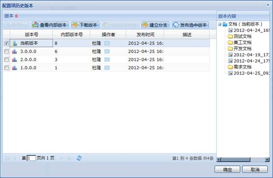
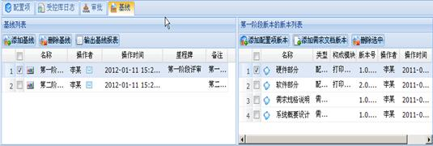
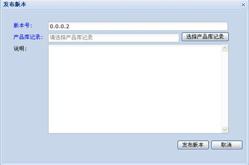
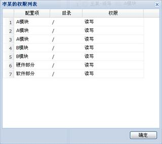

点击查看如何管理代码和文档？
在项目目录里选择一个要进行配置管理的项目，然后在功能导航区选择“配置管理”，则业务操作区会显示所选项目的配置管理模块信息，配置管理还提供了目录拖放能力。如下图所示：
图 配置管理
注意：无论是开发库、受控库还是产品库，通过选中配置项或文件夹的右键，可以SVN地址，通过SVN客户端进行访问和提交，但访问权限由系统统一控制。本软件提供Windows配置管理客户端，在“个人中心”中“软件下载”处可下载“配置管理客户端”。该软件的用户手册在安装后可以使用，此处不再涉及。
开发库是项目人员的工作环境，保存处于开发/变更的工作产品（文档/代码）。
4.2.7.1.1 配置项管理
4.2.7.1.1.1 配置项基本管理
在配置项管理目录中选择根节点，通过工具栏或右键菜单的“添加配置项”添加配置项。配置项添加后，选择某一配置项，通过工具栏或右键菜单的“修改配置项”、“删除配置项”修改或删除配置项，如下图所示。
图 配置项管理
在配置项管理的底部中勾选“显示产品规划”复选框，配置项管理目中将显示产品规划树，可以在产品规划树的各级节点下添加、修改、删除配置项，也可以拖拽各配置项调整配置项所在产品规划节点。
4.2.7.1.1.2 文件夹管理
1、添加、删除文件夹
通过配置项管理工具栏或右键菜单的“添加文件夹”添加文件夹。在配置项管理目录里要删除的文件夹，通过工具栏或右键菜单的“删除文件夹”删除文件夹。
2、导出目录
在配置项管理目录中选择一个要导出的配置项，通过右键菜单的“导出目录”导出。也可以在版本内容管理列表中选择要导出的文件夹，然后通过右键菜单的“导出目录”导出。
4.2.7.1.1.3 文档管理
1、添加文档
在配置项管理目录中选择根节点或文件夹，通过配置项管理列表工具栏或右键菜单的“添加文档”添加文档，添加的文档在右侧的版本内容列表中显示。也可以通过版本内容管理列表工具栏或右键菜单的“添加文档”添加。
2、删除文档
在版本内容管理列表中选择要删除的文档，然后选择右键菜单的“删除文档”删除。
3、下载文档
在版本内容管理列表中选择要下载的文档，然后选择右键菜单的“下载文档”下载。或左键双击版本内容管理列表中要下载的文档下载。
4、更新文档
更新文档就是用新的文档代替之前上传的文档，其中新文档和要代替的文档类型必须一致。在版本内容管理列表中选择一个要更新的文档，通过右键菜单的“更新文档”更新。
4.2.7.1.1.4 历史版本管理
1、查看历史版本
在版本内容管理列表中选择一个文件夹或文档，通过工具栏或右键菜单的“查看历史版本”，在版本内容管理列表下方会打开历史版本列表。在历史版本列表中会显示所选文件夹或文档各个版本。如下图所示：
图 查看历史版本
2、导出文件版本
在历史版本列表中选择要下载的版本，通过右键菜单的“导出文件版本”可以导出所选的版本。或左键双击历史版本列表中要下载的版本也可以下载。
3、查看详细信息
在历史版本列表中的一个版本，通过右键菜单的“查看详细信息”可以查看所选版本的详细信息。
4.2.7.1.1.5 版本管理
1、发布版本
在配置项管理目录中选择当前版本的根节点，然后选择右键菜单的“发布版本”发布配置项版本。发布版本时系统自动分配一个版本号，也可以手工填写，界面如下图所示。
图 发布配置项版本
2、下载版本
在配置项管理目录中选择默认分支版本的根节点，然后选择右键菜单的“下载版本”下载配置项当前版本或已发布版本。
4.2.7.1.1.6 查看配置项历史版本
1、通过配置项管理目录工具栏的“查看配置项历史版本”按钮可以查看配置项各历史版本内容，如下图所示。

图 看配置项历史版本
2、在配置项历史版本界面选择工具栏的“查看内部版本”可以查看配置项的内部版本情况。
3、在查看内部版本号界面，选中一个未发布的版本，点击“发布选中版本”可以发布一个旧的版本。
4、在配置项历史版本界面选择一个版本，通过工具栏的“下载版本”按钮可以下载所选的版本。
5、在配置项历史版本界面选择两个版本，通过工具栏的“比较版本报表”按钮，可以进行版本之间的比较。
6、在配置项历史版本界面选择一个版本，然后选择界面的“确定”按钮返回到主界面，配置项管理目录中显示所选择的配置项版本，可对该配置项版本进行相关版本管理操作。
7、在配置项历史版本界面选择一个版本，然后在右侧的版本内容显示区选择某一个文件夹目录，通过工具栏的“建立分支”按钮，可以在当前版本上建立目录分支。
4.2.7.1.1.7 申请导入到受控库
在配置项管理目录中选择一个版本或文件夹，或者在版本内容管理列表中选择一个文件夹或文档，然后通过右键菜单的“申请导入到受控库”可提交将所选项导入到受控库的申请。经过受控库管理人员审批后可以将所选项导入到受控库，如下图所示。
图 申请导入到受控库
4.2.7.1.1.8 文档和目录查询
在版本内容管理显示区的文本输入框中输入要查询的字符或者字符串，点击“查询”按钮就能够得到搜索结果。也可以直接输入文档后缀名查询出某一类文档，查询结果对大小写不敏感。
受控库负责保存开发过程中某个阶段工作结束时释放的阶段产品，用例图如下图所示。
4.2.7.2.1 配置项管理
在配置项管理目录中选择根节点，通过工具栏或右键菜单的“添加配置项”添加配置项。配置项添加后，选择某一配置项，通过工具栏或右键菜单的“修改配置项”、“删除配置项”修改或删除配置项，如下图所示。
图 配置项管理
在配置项管理的工具栏中勾选“显示产品规划”复选框，配置项管理目中将显示产品规划树，可以在产品规划树的各级节点下添加、修改、删除配置项。
4.2.7.2.2 配置项管理
4.2.7.2.2.1 文件夹管理
1、添加、删除文件夹
通过配置项管理目录工具栏或右键菜单的“添加文件夹”添加文件夹。在配置项管理目录里要删除的文件夹，通过工具栏或右键菜单的“删除文件夹”删除文件夹。
也可以通过版本内容管理列表工具栏上或右键菜单的“添加文件夹”按钮也可以添加文件夹。在版本内容管理列表中要删除的文件夹，通过右键菜单的“删除文件夹”可以删除文件夹。
2、导出目录
在配置项管理目录中选择一个要导出的配置项，通过右键菜单的“导出目录”导出。也可以在版本内容管理列表中选择要导出的文件夹，然后通过右键菜单的“导出目录”导出。
4.2.7.2.2.2 文档管理
1、添加文档
在配置项管理目录中选择根节点或文件夹，通过配置项管理列表工具栏或右键菜单的“添加文档”添加文档，添加的文档在右侧的版本内容列表中显示。也可以通过版本内容管理列表工具栏或右键菜单的“添加文档”添加。
2、删除文档
在版本内容管理列表中选择要删除的文档，然后选择右键菜单的“删除文档”删除。
3、下载文档
在版本内容管理列表中选择要下载的文档，然后选择右键菜单的“下载文档”下载。或左键双击版本内容管理列表中要下载的文档下载。
4、更新文档
更新文档就是用新的文档代替之前上传的文档，其中新文档和要代替的文档文档类型必须一致。在版本内容管理列表中选择一个要更新的文档，通过右键菜单的“更新文档”更新。
4.2.7.2.2.3 历史版本管理
1、查看历史版本
在版本内容管理列表中选择一个文件夹或文档，通过工具栏或右键菜单的“查看历史版本”，在版本内容管理列表下方会打开历史版本列表。在历史版本列表中会显示所选文件夹或文档各个版本。如下图所示。
图 查看历史版本
2、导出文件版本
在历史版本列表中选择要下载的版本，通过右键菜单的“导出文件版本”可以导出所选的版本。或左键双击历史版本列表中要下载的版本也可以下载。
3、查看详细信息
在历史版本列表中的一个版本，通过右键菜单的“查看详细信息”可以查看所选版本的详细信息。
4.2.7.2.2.4 版本管理
1、发布版本
在配置项管理目录中选择当前版本的根节点，然后选择右键菜单的“发布版本”发布配置项版本。发布版本时系统自动分配一个版本号，也可以手工填写。发布受控库版本时需要添加受控库的发布版本记录，如果没有填写发布版本记录，需要首先填写记录，才允许发布配置项版本。添加发布版本记录在受控库日志界面操作进行。如下图所示。
图 发布配置项版本
2、下载版本
在配置项管理目录中选择默认分支版本的根节点，然后选择右键菜单的“下载版本”下载配置项当前版本或已发布版本。
4.2.7.2.2.5 查看配置项历史版本
1、通过配置项管理目录工具栏的“查看配置项历史版本”按钮可以查看配置项各历史版本内容，如下图所示。
图 看配置项历史版本
2、在配置项历史版本界面选择工具栏的“查看内部版本”可以查看配置项的内部版本情况。
3、在查看内部版本号界面，选中一个未发布的版本，点击“发布选中版本”可以发布一个旧的版本。
4、在配置项历史版本界面选择一个版本，通过工具栏的“下载版本”按钮可以下载所选的版本。
5、在配置项历史版本界面选择两个版本，通过工具栏的“比较版本报表”按钮，可以进行版本之间的比较。
6、在配置项历史版本界面选择一个版本，然后选择界面的“确定”按钮返回到主界面，配置项管理目录中显示所选择的配置项版本，可对该配置项版本进行相关版本管理操作。
7、在配置项历史版本界面选择一个版本，然后在右侧的版本内容显示区选择某一个文件夹目录，通过工具栏的“建立分支”按钮，可以在当前版本上建立目录分支。
4.2.7.2.2.6 申请导入到产品库
在配置项管理目录中选择一个版本或文件夹，或者在版本内容管理列表中选择一个文件夹或文档，然后通过右键菜单的“申请导入到产品库”可提交将所选项导入到受控库的申请。经过产品库管理人员审批后可以将所选项导入到产品库，如下图所示。
图 申请导入到产品库
4.2.7.2.2.7 文档和目录查询
在版本内容管理显示区的文本输入框中输入要查询的字符或者字符串，点击“查询”按钮就能够得到搜索结果。也可以直接输入文档后缀名查询出某一类文档，查询结果对大小写不敏感。
4.2.7.2.3 审批
1、批准
在申请入库日志列表中选择一个入库日志，选择工具条或右键菜单的“批准”，系统弹出如下图所示的审批界面，在该界面需选择显示申请项的配置项以及填写一些基本信息。经过审批后申请项显示在选择的配置项下，申请入库日志被系统自动记录到受控库日志中。

图 审批
2、拒绝
在申请入库日志列表中选择一个入库日志，选择工具条或右键菜单的“拒绝”拒绝提交的申请。
4.2.7.2.4 受控库日志
1、通过出库入库日志列表工具栏或右键菜单的“添加”、“删除”、“修改”可以添加、删除、修改受控库日志。
2、通过出库入库日志列表工具栏的“报告”按钮，可以输出配置管理报告。
3、通过配置审核记录列表工具栏的“添加”按钮可以添加配置审核记录。
4.2.7.2.5 基线管理

图 基线管理主界面
4.2.7.2.5.1 基线
1、通过基线列表工具栏“添加基线”按钮添加基线。添加基线时可以选择节点，以便和“项目计划”中的节点联系起来。
2、在基线列表中选择一个基线，通过工具栏或右键菜单的“修改基线”、“删除基线”修改或删除基线。
3、通过工具栏的“输出基线报表”按钮，可以输出基线报表。
4.2.7.2.5.2 配置项版本
在基线列表中选择一个基线，通过右键菜单的“添加配置项版本”，系统弹出如下图所示的提交配置项界面，在该界面配置项目录中选择一个配置项，然后在版本列表选择所选配置项对应的版本，选择后点击“确定”按钮为基线添加配置项版本。此外通过初样的版本列表工具栏或右键菜单的“添加配置项版本”或“删除选中”也可以添加或删除配置项版本。
图 提交配置项
4.2.7.2.5.3 需求文档版本
在基线列表中选择一个基线，选择右键菜单的“添加需求文档版本”，系统弹出如下图所示的选择文档界面，在该界面选择一个需求文档，然后选择所选需求文档的版本，最后选择“确定”按钮为基线添加需求文档版本。此外通过初样的版本列表工具栏或右键菜单的“添加需求文档版本”或“删除选中”也可以添加或删除需求文档版本。
图 选择文档
产品库负责保存稳定的要发布的产品，例如安装和验收的产品。
4.2.7.3.1 配置项管理
在配置项管理目录中选择根节点，通过工具栏或右键菜单的“添加配置项”添加配置项。配置项添加后，选择某一配置项，通过工具栏或右键菜单的“修改配置项”、“删除配置项”修改或删除配置项，如下图所示。
图 置项管理
在配置项管理的工具栏中勾选“显示产品规划”复选框，配置项管理目中将显示产品规划树，可以在产品规划树的各级节点下添加、修改、删除配置项。
4.2.7.3.2 配置项管理
4.2.7.3.2.1 文件夹管理
1、添加、删除文件夹
通过配置项管理目录工具栏或右键菜单的“添加文件夹”添加文件夹。在配置项管理目录里要删除的文件夹，通过工具栏或右键菜单的“删除文件夹”删除文件夹。
也可以通过版本内容管理列表工具栏上或右键菜单的“添加文件夹”按钮也可以添加文件夹。在版本内容管理列表中要删除的文件夹，通过右键菜单的“删除文件夹”可以删除文件夹。
2、导出目录
在配置项管理目录中选择一个要导出的配置项，通过右键菜单的“导出目录”导出。也可以在版本内容管理列表中选择要导出的文件夹，然后通过右键菜单的“导出目录”导出。
4.2.7.3.2.2 文档管理
1、添加文档
在配置项管理目录中选择根节点或文件夹，通过配置项管理列表工具栏或右键菜单的“添加文档”添加文档，添加的文档在右侧的版本内容列表中显示。也可以通过版本内容管理列表工具栏或右键菜单的“添加文档”添加。
2、删除文档
在版本内容管理列表中选择要删除的文档，然后选择右键菜单的“删除文档”删除。
3、下载文档
在版本内容管理列表中选择要下载的文档，然后选择右键菜单的“下载文档”下载。或左键双击版本内容管理列表中要下载的文档下载。
4、更新文档
更新文档就是用新的文档代替之前上传的文档，其中新文档和要代替的文档文档类型必须一致。在版本内容管理列表中选择一个要更新的文档，通过右键菜单的“更新文档”更新。
4.2.7.3.2.3 历史版本管理
1、查看历史版本
在版本内容管理列表中选择一个文件夹或文档，通过工具栏或右键菜单的“查看历史版本”，在版本内容管理列表下方会打开历史版本列表。在历史版本列表中会显示所选文件夹或文档各个版本。如下图所示。
图 查看历史版本
2、导出文件版本
在历史版本列表中选择要下载的版本，通过右键菜单的“导出文件版本”可以导出所选的版本。或左键双击历史版本列表中要下载的版本也可以下载。
3、查看详细信息
在历史版本列表中的一个版本，通过右键菜单的“查看详细信息”可以查看所选版本的详细信息。
4.2.7.3.2.4 版本管理
1、发布版本
在配置项管理目录中选择当前版本的根节点，然后选择右键菜单的“发布版本”发布配置项版本。发布版本时系统自动分配一个版本号，也可以手工填写。发布受控库版本时需要添加受控库的发布版本记录，如果没有填写发布版本记录，需要首先填写记录，才允许发布配置项版本。添加发布版本记录在受控库日志界面操作进行。如下图所示。

图 发布配置项版本
2、下载版本
在配置项管理目录中选择默认分支版本的根节点，然后选择右键菜单的“下载版本”下载配置项当前版本或已发布版本。
4.2.7.3.2.5 查看配置项历史版本
1、通过配置项管理目录工具栏的“查看配置项历史版本”按钮可以查看配置项各历史版本内容，如下图所示。
图 看配置项历史版本
2、在配置项历史版本界面选择工具栏的“查看内部版本”可以查看配置项的内部版本情况。
3、在查看内部版本号界面，选中一个未发布的版本，点击“发布选中版本”可以发布一个旧的版本。
4、在配置项历史版本界面选择一个版本，通过工具栏的“下载版本”按钮可以下载所选的版本。
5、在配置项历史版本界面选择两个版本，通过工具栏的“比较版本报表”按钮，可以进行版本之间的比较。
6、在配置项历史版本界面选择一个版本，然后选择界面的“确定”按钮返回到主界面，配置项管理目录中显示所选择的配置项版本，可对该配置项版本进行相关版本管理操作。
7、在配置项历史版本界面选择一个版本，然后在右侧的版本内容显示区选择某一个文件夹目录，通过工具栏的“建立分支”按钮，可以在当前版本上建立目录分支。
4.2.7.3.2.6 文档和目录查询
在版本内容管理显示区的文本输入框中输入要查询的字符或者字符串，点击“查询”按钮就能够得到搜索结果。也可以直接输入文档后缀名查询出某一类文档，查询结果对大小写不敏感。
4.2.7.3.3 审批
1、批准
在申请入库日志列表中选择一个入库日志，选择工具条或右键菜单的“批准”，系统弹出如下图所示的审批界面，在该界面需选择显示申请项的配置项以及填写一些基本信息。经过审批后申请项显示在选择的配置项下，申请入库日志被系统自动记录到产品库日志中。
图 审批
2、拒绝
在申请入库日志列表中选择一个入库日志，选择工具条或右键菜单的“拒绝”拒绝提交的申请。
4.2.7.3.4 产品库日志
1、通过出库入库日志列表工具栏或右键菜单的“添加”、“删除”、“修改”可以添加、删除、修改受控库日志。
2、通过出库入库日志列表工具栏的“报告”按钮，可以输出配置管理报告。
3、通过配置审核记录列表工具栏的“添加”按钮可以添加配置审核记录。
4.2.7.3.5 基线管理
图 基线管理主界面
4.2.7.3.5.1 基线
1、通过基线列表工具栏“添加基线”按钮添加基线。添加基线时可以选择节点，以便和“项目计划”中的节点联系起来。
2、在基线列表中选择一个基线，通过工具栏或右键菜单的“修改基线”、“删除基线”修改或删除基线。
3、通过工具栏的“输出基线报表”按钮，可以输出基线报表。
4.2.7.3.5.2 配置项版本
在基线列表中选择一个基线，通过右键菜单的“添加配置项版本”，系统弹出如下图所示的提交配置项界面，在该界面配置项目录中选择一个配置项，然后在版本列表选择所选配置项对应的版本，选择后点击“确定”按钮为基线添加配置项版本。此外通过初样的版本列表工具栏或右键菜单的“添加配置项版本”或“删除选中”也可以添加或删除配置项版本。
图 提交配置项
4.2.7.3.5.3 需求文档版本
在基线列表中选择一个基线，选择右键菜单的“添加需求文档版本”，系统弹出如下图所示的选择文档界面，在该界面选择一个需求文档，然后选择所选需求文档的版本，最后选择“确定”按钮为基线添加需求文档版本。此外通过初样的版本列表工具栏或右键菜单的“添加需求文档版本”或“删除选中”也可以添加或删除需求文档版本。
图 选择文档
配置管理授权主界面如下图所示。
图 配置管理授权
4.2.7.4.1 用户授权
在配置项目录中选择一个项，在用户列表中选择一个或多个用户，通过用户列表工具栏的“读权限”或“读写权限”按钮给用户授权，授予的权限在用户权限列表中显示。
4.2.7.4.2 查看用户授权
在用户列表中选择一个用户，通过工具栏的“查看用户授权”按钮查看所选用户的权限，如下图所示。

图 查看用户权限
4.2.7.5 配置管理报表
在配置项目录中选择要输出报表的项，然后通过工具栏的“查看详细信息”或“统计分析”按钮查看详细信息或进行统计。统计分析报表如下图所示。
图 配置管理报表